OUR TEAM
团队成员
按成员类型清晰分类，点击人物卡片可查看个人研究方向与详细简介。
教师及科研人员
3 MEMBERS

研究生
12 MEMBERS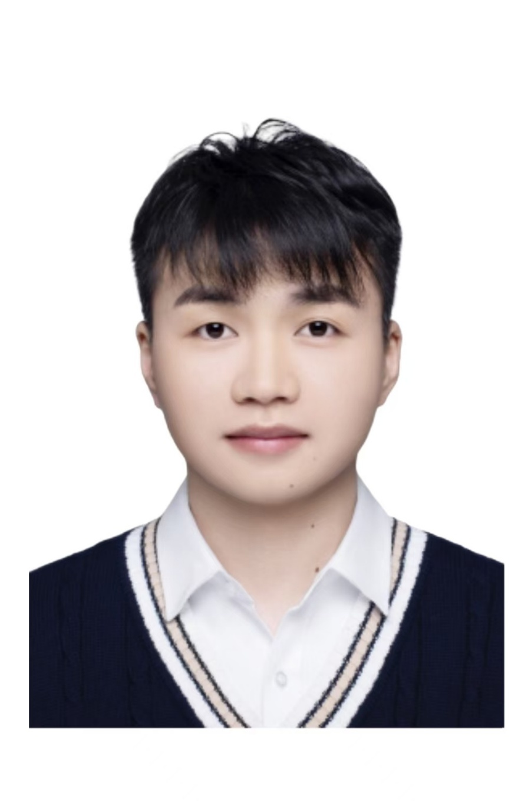
博士研究生｜一年级
李丙辉
药物分析
查看个人简介
博士研究生｜三年级
安达丝
药用植物抗纤维化候选物的高通量发现与荧光成像
查看个人简介
2024级硕士研究生｜三年级
张云舒
近红外半胱氨酸探针与肝损伤保护活性成分筛选
查看个人简介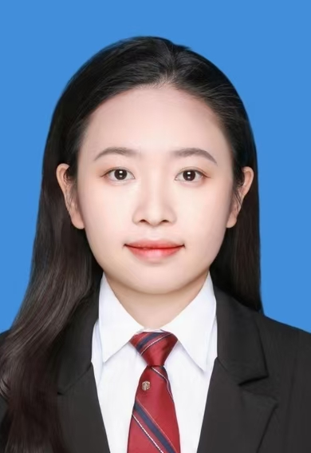
硕士研究生｜三年级
李倩
药食同源补肾抗衰活性物质筛选与功效评价
查看个人简介
硕士研究生｜三年级
张文昕
中药质量评价与资源开发
查看个人简介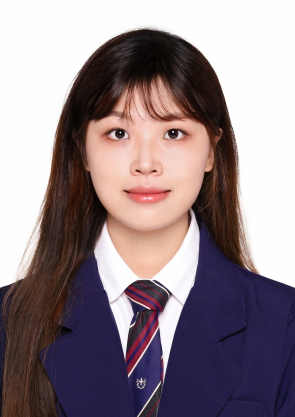
硕士研究生｜三年级
肖敏
中药资源学
查看个人简介硕士研究生｜三年级
陈星宇
药物代谢动力学
查看个人简介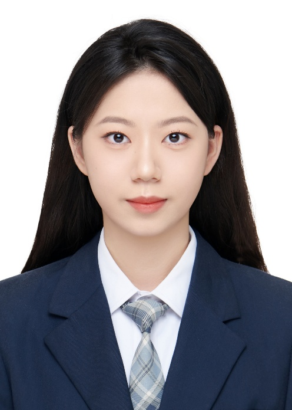
硕士研究生｜二年级
利圣萍
中药质量评价与资源开发
查看个人简介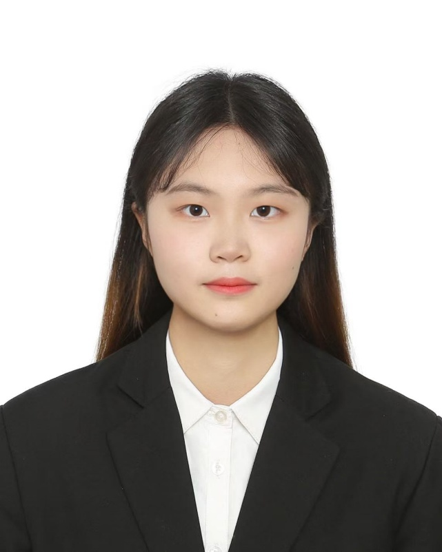
硕士研究生｜二年级
徐家晨
生药学
查看个人简介
硕士研究生｜二年级
艾枳
AI与机器学习驱动的下一代抗纤维化药物发现
查看个人简介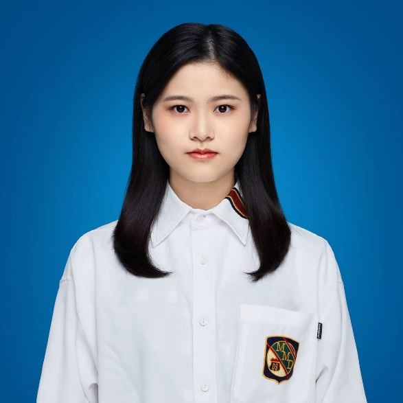
硕士研究生｜二年级
陈璇
中药生物技术
查看个人简介
硕士研究生｜二年级
陈静怡
中药纳米递送系统与分子荧光探针
查看个人简介已毕业成员
10 MEMBERS
2021级｜中药生物技术
张开羽
荧光探针驱动的中药与慢性肾病研究、分析化学
查看个人简介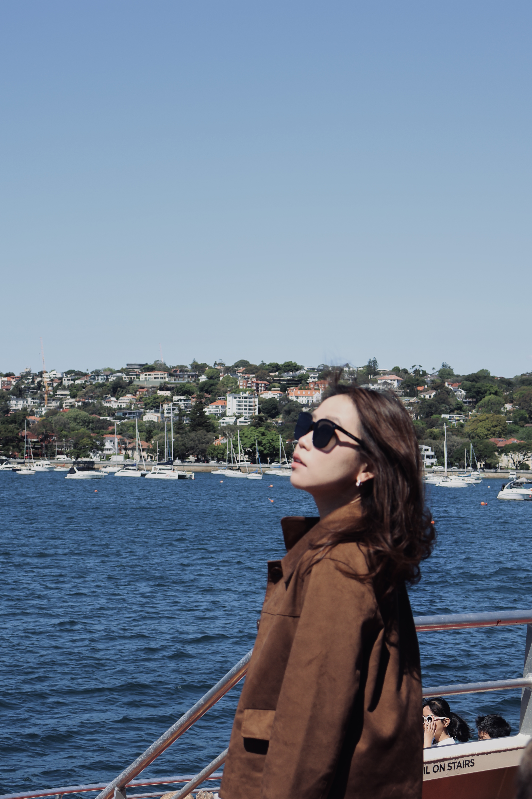
2022级｜中药学
陈美琪
中药质量分析；基于 SELEX 技术的马兜铃酸 A DNA 适配体筛选及应用检测
查看个人简介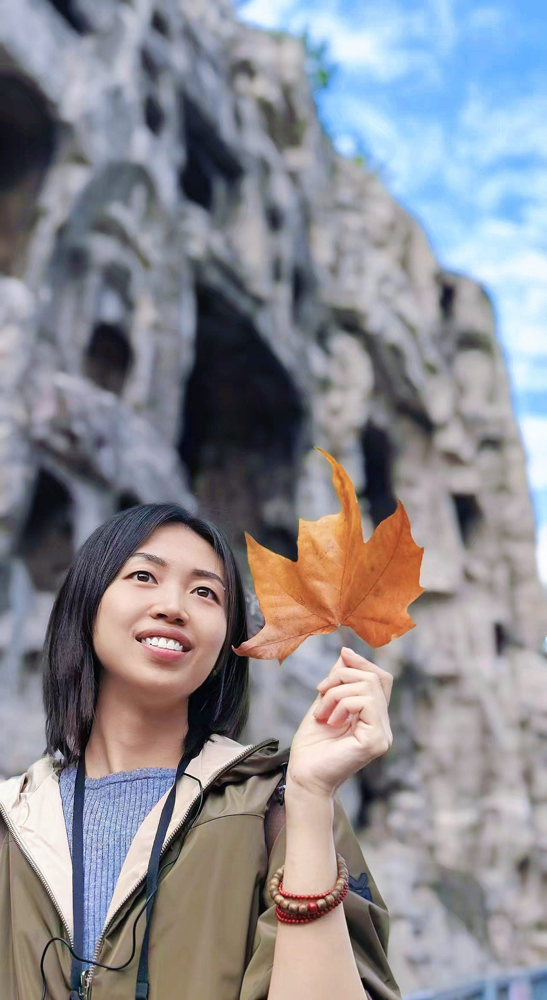
2020级｜中药学
高涵
药物性肾损伤早期检测；近红外荧光/光声成像探针；核酸生物标志物检测；中药活性成分高通量筛选
查看个人简介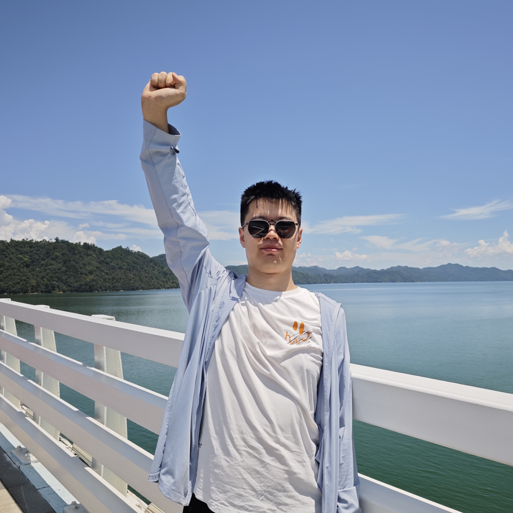
2020级｜中药生物技术学
刘浩
硒代半胱氨酸荧光探针与疾病诊断、活性天然药物发掘；纳米探针与肿瘤免疫及药物开发
查看个人简介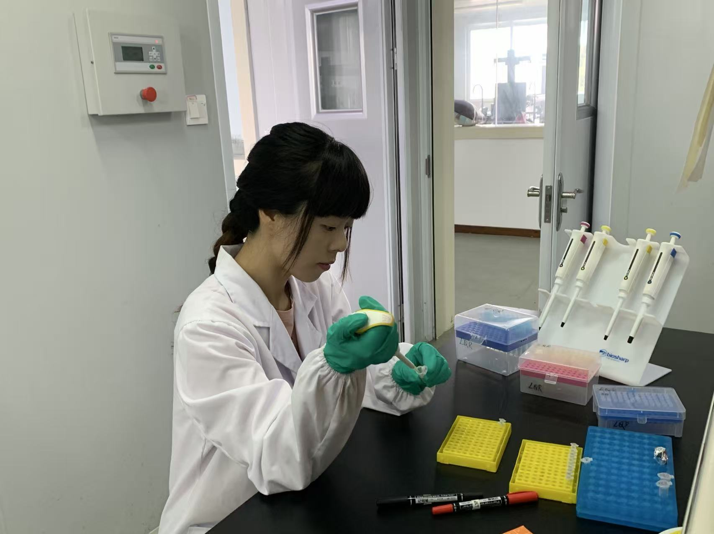
2013级｜生药学
罗荧萍
SELEX 生物技术及分子探针；肿瘤诊疗一体化
查看个人简介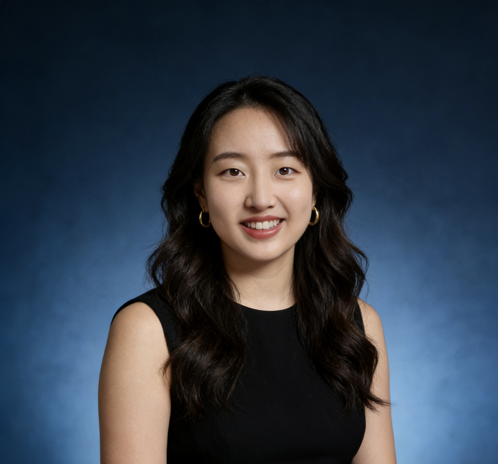
2018级｜生药学
闫瑾
纳米荧光探针制备及应用；生物医药成果转化
查看个人简介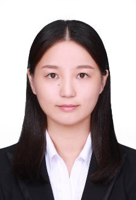
2014级｜生药学
孙娴
药品实验室质量管理与药品培训
查看个人简介
2019级｜中药学
张文泽
肝脏疾病分子成像；天然产物筛选
查看个人简介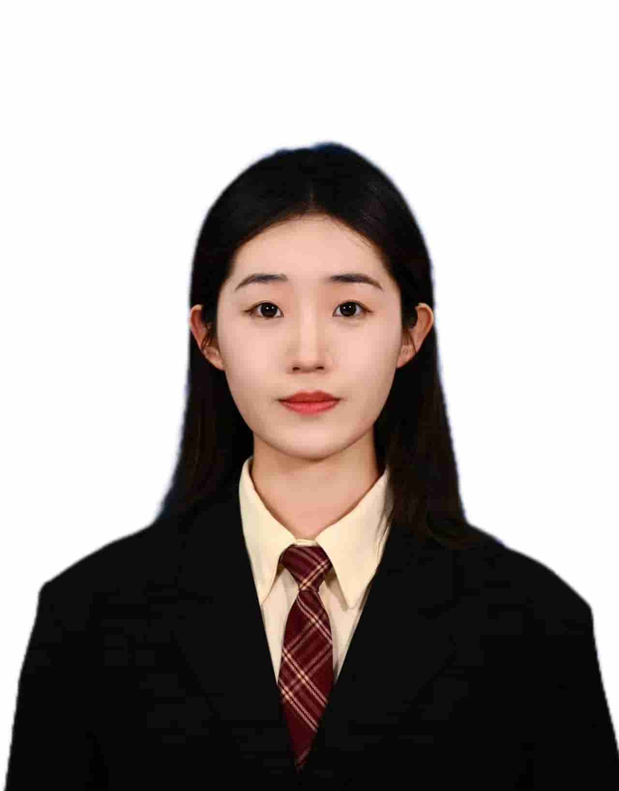
2022级｜中药学
张家馨
中药活性成分识别新技术与方法（依据现有成果资料整理）
查看个人简介
2023级｜中药系
胡慧兰
暂无补充
查看个人简介